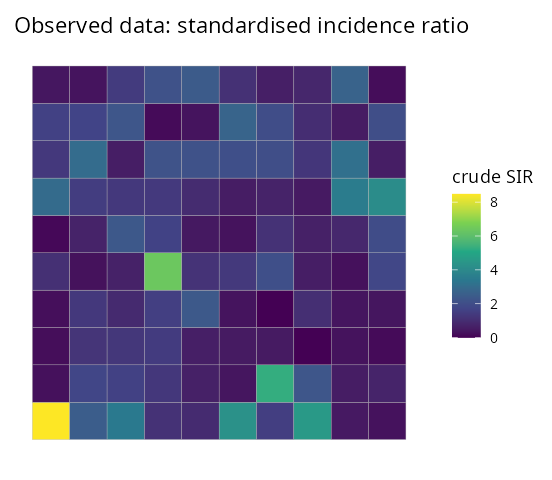
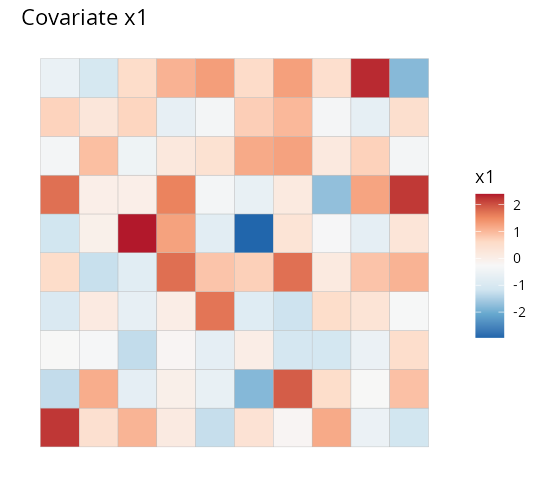
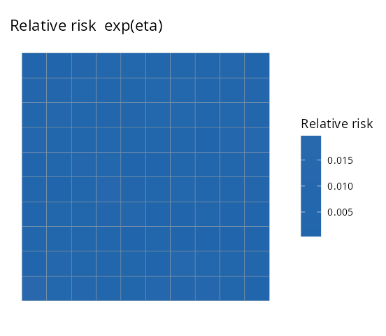
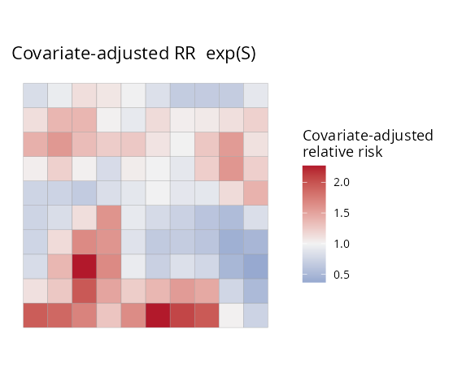
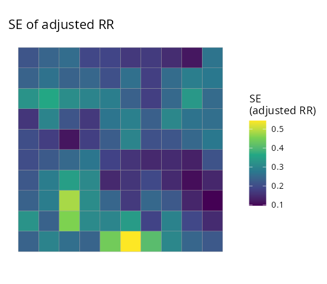
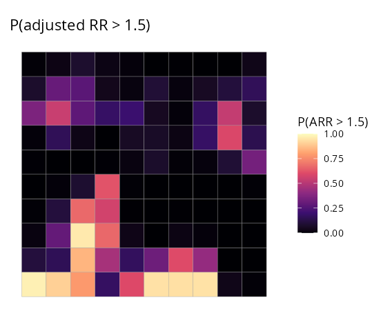
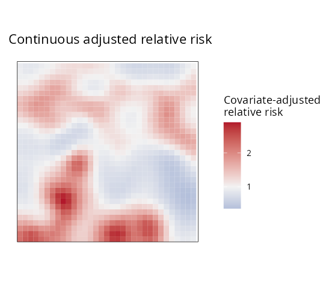
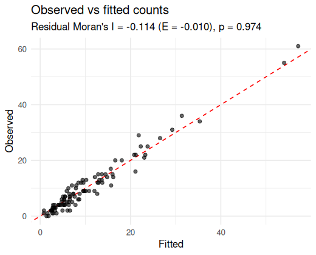

This tutorial fits a spatial disease-mapping model end to end and is fully self-contained: every code block below runs as shown (set a seed and copy-paste).
The model
We observe disease counts aggregated over areal units () with an offset (the expected count, e.g. population times a baseline rate). SDALGCP2 fits a spatially discrete approximation to a log-Gaussian Cox process: where are area-level covariates and is a Gaussian spatial random effect. is the average over area of a continuous Gaussian process with exponential covariance ; aggregating this process over the areas gives an covariance built from candidate points inside each region (see Tutorial 4). The parameters are the coefficients , the spatial variance and the range .
Two quantities are reported for every area:
- Relative risk — the full relative risk, including the covariate effect;
- Covariate-adjusted relative risk — the residual spatial relative risk after adjusting for covariates (where is risk high/low beyond what the covariates explain?).
Simulate a data set
sdalgcp() takes an sf object whose columns
hold the response, covariates and offset. Here we simulate one; in
practice this is your shapefile joined to a counts table.
library(SDALGCP2)
library(sf)
set.seed(2024)
regions <- st_sf(geometry = st_make_grid(
st_as_sfc(st_bbox(c(xmin = 0, ymin = 0, xmax = 20, ymax = 20))), n = c(10, 10)))
N <- nrow(regions)
# a spatial random effect, a covariate, a population offset, and Poisson counts
pts <- sda_points(regions, delta = 0.9, method = 3)
S <- as.numeric(t(chol(0.5 * precompute_corr(pts, 4)$R[, , 1])) %*% rnorm(N))
regions$x1 <- rnorm(N)
regions$pop <- round(runif(N, 800, 5000))
regions$cases <- rpois(N, regions$pop * exp(-6 + 0.6 * regions$x1 + S))
regions$SIR <- regions$cases / (regions$pop * exp(-6)) # crude standardised ratioThe crude standardised incidence ratio (SIR) is noisy and over-fits sparsely populated areas — exactly what a model smooths:
| Crude SIR (the data) | Covariate x1
|
|---|---|
 |
 |
Fit
One call. Candidate-point spacing, the spatial range and MCMC
settings are chosen automatically; reanchor = 3
re-simulates the latent field at the optimum a few times for reliable
variance estimates.
fit <- sdalgcp(cases ~ x1 + offset(log(pop)), data = regions,
control = sdalgcp_control(reanchor = 3))
summary(fit)#> Coefficients:
#> Estimate Std.Err z value Pr(>|z|)
#> (Intercept) -6.057 0.130 -46.78 < 2e-16 ***
#> x1 0.664 0.040 16.49 < 2e-16 ***
#> sigma^2 0.374 0.507 0.74 0.46
#> phi 1.839 0.444 4.14 3.5e-05 ***
#>
#> Spatial scale phi: 1.84
#> MC importance-sampling ESS: 208 / 1000 (21%); log-lik MC SE: 0.062The covariate effect x1 is estimated at 0.66 (true value
0.6), the spatial range phi and variance
sigma^2 describe the residual spatial structure, and the
importance-sampling effective sample size reports how reliable the Monte
Carlo likelihood is.
Map the two relative risks
Relative risk RR
|
Covariate-adjusted ARR
|
|---|---|
 |
 |
RR (left) is the overall pattern of risk;
ARR (right) strips out the covariate contribution and shows
the unexplained spatial signal — useful for spotting hotspots
that the covariates do not account for.
Uncertainty and exceedance
Every quantity comes with a standard error, and you can ask for the probability that risk exceeds a policy threshold:
plot(fit, "ARR_se") # standard error of the adjusted RR
plot(fit, "exceedance", threshold = 1.5) # P(adjusted RR > 1.5)| SE of adjusted RR | P(adjusted RR > 1.5) |
|---|---|
 |
 |
The exceedance map is usually the most decision-relevant output: it flags areas that are confidently above the threshold rather than high by chance.
A continuous surface
Risk can also be predicted on a fine grid (change-of-support), giving a smooth surface instead of a choropleth:
pc <- predict(fit, type = "continuous", sampler = "laplace", cellsize = 0.6)
plot(pc, "ARR", bound = regions)
predict() returns all four quantities (RR,
ARR and their _se) for both
type = "discrete" and type = "continuous", and
exceedance() works on either.
Model checking
Finally, check that the spatial term has absorbed the spatial structure: the Pearson residuals should show no leftover spatial autocorrelation.
model_check(fit)
#> Residual Moran's I = -0.114 (E = -0.010), p = 0.974A non-significant residual Moran’s I (here ) indicates the model has captured the spatial pattern, and the observed-vs-fitted points lie around the identity line.
Next
- Raster predictors — continuous covariates done right.
- Spatio-temporal — space–time relative risk.
- Estimating the scale — what is and how it is estimated.
- Spatial confounding and misaligned covariates. ```